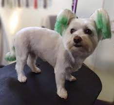

Грумінг - найкращий догляд для вашого улюбленця

Доглядовий спосіб зробити свого улюбленця привабливим
Процедура грумінгу собак – це не лише різні стрижки, а цілий комплексний догляд, який виконується насамперед для гігієни вихованця.
Знайти салон і грумера для свого собаки також важливо, як свого перукаря.
І якщо ви зараз знаходитесь в пошуках місця, де можна підстригти собаку і зробити системний догляд, запрошуємо вас почитати поради щодо цих процедур
Що ж таке грумінг?
Грумінг - це не просто модна стрижка для собачки, це цілий комплекс процедур, який включає : догляд за шерстю, лапками, очима, вухами, зубами та іншими частинами тіла твого улюбленця.
Для деяких порід регулярний професійний грумінг є незамінним. Для решти він дуже бажаний, оскільки правильно обробити очі, вушка, зубки в домашніх умовах дуже складно. До того ж, для цього потрібні спеціальні доглядові засоби та інструменти, якими користуються професійні грумери.
В Нашому салоні ми пропонуємо: салонний, виставковий та креативний грумінг.
•Салонний - найбільш поширений вид грумінгу. На твого улюбленця чекає справжня SPA-процедура: купання в теплому душі з використанням органічних доглядових засобів з неймовірними ароматами, стрижка відповідно до породи, педікюр, обробка вушок, догляд за зубками та очима. Справжня насолода для собачої душі.
•Виставковий, або породний ma - як ви вже здогадались, цей вид грумінгу - частина підготовки до професійних виставок. Ми причепурюємо хвостика відповідно до стандартів породи, використовуємо професійну косметику. Такий догляд - не на щодень, але цілком підійде для особливої події.
•Креативний - для чотирилапих модників та модниць. Незвичайна стрижка чи професійне фарбування- і твій улюбленець в центрі уваги. Наші грумери просто обожнюють такі замовлення, адже це можливість втілити найоригінальніші ідеї.
Догляд та гігієна
Навіть якщо вашому песику не потрібна регулярна стрижка або експрес-линька, ти можеш записати хвостика на гігієнічний догляд.
Догляд за улюбленцем включає наступні етапи :
- Купання собаки
- Обов'язкова чистка вух
- Корекція кігтів
- Живлення та зволожуваня шерсті за допомогою кондиціонерів, бальзамів та масок
- Догляд за зубами
- Вичісування
- Сушка
Дана гігієнічна процедура необхідна для домашніх собак та котів не рідше, ніж раз на 2 тижні.
Також, залюбки проконсультуємо вас щодо домашнього догляду. Адже використовуючи вдома професійні засоби, ви можете відвідувати салон рідше. Звісно, наші грумери сумуватимуть за кожним хвостиком, але думка про те, що малий отримує належний догляд вдома, грітиме душу.
Коли ваш хвостик потребує тримінгу?
Тримінг – це процедура видалення омертвілої шерсті, особливо актуальна для жорсткошерстих собак. Ці песики не линяють, що дуже зручно в побуті, але їм потрібен особливий догляд для правильного оновлення шерсті.
Регулярність тримінгу залежить від породи, зазвичай цю процедуру проводять раз в півроку. Вищипування омертвілої шерсті абсолютно безболісне для песика, але ми ще доповнюємо цю процедуру приємним купанням з шампунями, які так люблять наші чотирилапі відвідувачі.
Бажаєте прикрасити вашого улюбленця особливим фарбуванням?
Фарбування шерсті використовується для підтримки природного забарвлення тварини, приховування деяких недоліків.
Але за допомогою професійних засобів ми можемо також створити неповторний, стильний образ твоєм улюбленцю.
Ми використовуємо органічні, гіпоалергенні стійкі фарби, розроблені спеціально для тварин. Також, можемо причепурити хвостика до особливої події з тимчасовими фарбами.
Можливо, він стане трендсеттером району? :)
Не забуваємо про котиків та їх потреби
Тільки не думайте, що ми забули про кішок та котків. Навпаки, наші грумери розробили особливий набір процедур для пухнастиків.
Починаємо з гігієнічного догляду: купання зі спеціальною доглядовою косметикою, підрізання кігтиків, чистка вух та обробка очей.
Далі експрес-линька - улюблена процедура власників. Ми делікатно вичісуємо котика, усуваючи омертвілу шерсть. Завдяки цьому, найближчі кілька тижнів тобі не доведеться зчищати шерсть з усіх подушок та недбало залишеного одягу.
Крім того, котика можна підстригти чи пофарбувати, створивши неповторний образ.